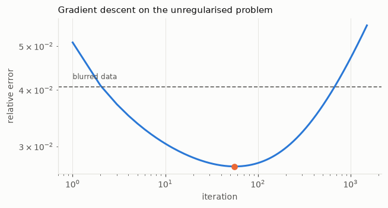
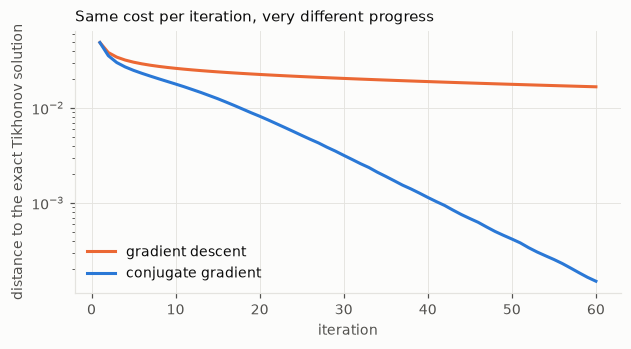
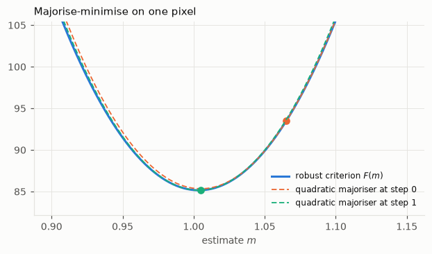
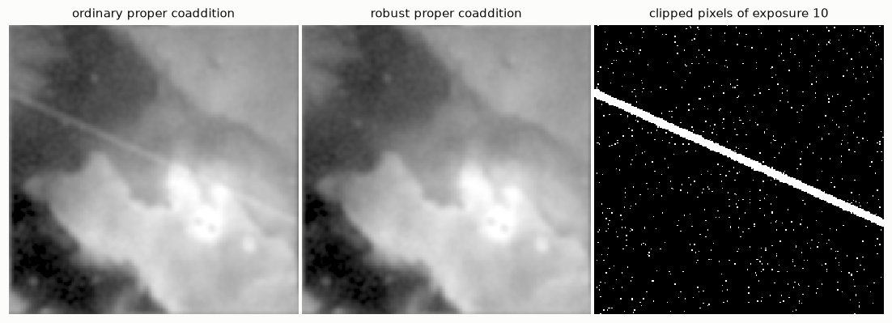
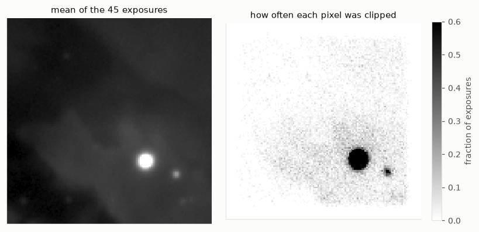

import numpy as np
from numpy.fft import fft2, ifft2, fftfreq
import matplotlib.pyplot as plt
import hnotools as hno
hno.style()
rng = np.random.default_rng(0)
data = hno.load_sample()9 Iterative methods: when there is no closed form
This notebook follows chapter 4 of H. Talbot’s Lecture Notes on Optimisation (gradient descent, conjugate gradient, majorise-minimise) and applies it to the problems of the previous notebooks. It is the bridge from the textbook material to the research project.
Every solution so far was a formula: transform, divide with care, transform back. That works when a fast transform diagonalises the problem and the criterion is a sum of squares. Change either, and the formula is gone: a blur that varies across the image, boundaries that are neither periodic nor reflexive, a penalty that is not quadratic (notebook 7), a loss that must resist outliers (notebook 8).
What you will take away
- An iterative method needs only two functions: one that applies \(A\), one that applies \(A^{\mathsf T}\). Never a matrix.
- Gradient descent is simple and slow, and stopping it early is itself a regularisation.
- Conjugate gradient solves the Tikhonov problem in a few dozen iterations.
- Majorise-minimise turns a hard criterion into a sequence of easy ones. Applied to a robust loss, it makes proper coaddition immune to a spoiled exposure, and each of its steps is an ordinary proper coaddition.
9.1 Operators, not matrices
An iterative method never asks “what is \(A\)?”. It asks “what is \(A\) times this vector?”, and sometimes “what is \(A^{\mathsf T}\) times that one?”. So we write the blur as two functions. For a convolution, \(A^{\mathsf T}\) is the convolution with the PSF flipped upside-down and left-right; in Fourier space, multiplication by the conjugate \(\bar K\).
We keep the FFT here because it is fast and familiar, but nothing below depends on it: replace the bodies of A and AT by any linear operation and its transpose, and the algorithms are unchanged.
x_true = data['hubble'].astype(float)
K = hno.psf2otf(hno.gaussian_psf(x_true.shape, fwhm=6.0))
A = lambda v: ifft2(K * fft2(v)).real # blur
AT = lambda v: ifft2(np.conj(K) * fft2(v)).real # its transpose
b = A(x_true) + 0.005 * rng.standard_normal(x_true.shape)A habit worth more than any algorithm: test your transpose. By definition, \(\langle A u, v\rangle = \langle u, A^{\mathsf T} v\rangle\) for all \(u, v\). Take two random images and compare the two numbers. If they differ, the operator pair is wrong, and every method built on it will quietly converge to nonsense.
u, v = rng.standard_normal(x_true.shape), rng.standard_normal(x_true.shape)
print('<A u, v> =', np.sum(A(u) * v))
print('<u, AT v> =', np.sum(u * AT(v)))<A u, v> = 49.15959985748253
<u, AT v> = 49.159599857482539.2 Gradient descent
Take the plain least-squares criterion \(F(x) = \tfrac12 \|A x - b\|^2\). Its gradient is \(\nabla F(x) = A^{\mathsf T}(A x - b)\): blur the current guess, compare with the data, send the difference back through \(A^{\mathsf T}\). Gradient descent walks downhill,
\[x_{k+1} = x_k - \tau\, A^{\mathsf T}(A x_k - b) ,\]
and converges if the step \(\tau\) is below \(2 / \|A\|^2\). For a blur that conserves light the largest singular value is 1, so \(\tau = 1\) is safe.
x = np.zeros_like(b)
err_gd = []
for k in range(1500):
x = x - 1.0 * AT(A(x) - b)
err_gd.append(hno.rel_error(x, x_true))
k_best = int(np.argmin(err_gd)) + 1
fig, ax = plt.subplots(figsize=(6.4, 3.1))
ax.loglog(np.arange(1, 1501), err_gd, color=hno.BLUE)
ax.plot(k_best, min(err_gd), 'o', color=hno.ORANGE)
ax.axhline(hno.rel_error(b, x_true), color=hno.INK2, lw=1.0, ls=(0, (4, 2)))
ax.text(1, hno.rel_error(b, x_true) * 1.04, 'blurred data', fontsize=8, color=hno.INK2)
ax.set_xlabel('iteration'); ax.set_ylabel('relative error'); ax.set_title('Gradient descent on the unregularised problem', loc='left');
print(f'smallest error {min(err_gd):.4f} at iteration {k_best}; after 1500 iterations {err_gd[-1]:.4f}')smallest error 0.0271 at iteration 56; after 1500 iterations 0.0556
In Figure 9.1 the error goes down, reaches a minimum, and comes back up. We are minimising the unregularised criterion, whose minimiser is the naive solution of notebook 1; given enough iterations, gradient descent would get there, garbage included.
But it gets there in a particular order. One can show that after \(k\) steps the iterate is a filtered solution in the sense of notebook 5, with filter factors \(\phi_i = 1 - (1 - \tau\sigma_i^2)^k\): the components with large singular values converge first, the noisy ones last. Stopping early is a regularisation, and the iteration count plays the role of \(1/\alpha\). This behaviour is called semi-convergence. It is the U-curve once more, with the iteration number on the horizontal axis.
9.3 Conjugate gradient
Now a criterion with a proper minimum: Tikhonov, \(F(x) = \tfrac12\|Ax - b\|^2 + \tfrac12\alpha^2\|x\|^2\). Its minimiser solves the regularised normal equations of notebook 6,
\[\underbrace{(A^{\mathsf T} A + \alpha^2 I)}_{M}\; x = A^{\mathsf T} b ,\]
a linear system whose matrix \(M\) is symmetric positive definite. For such systems there is a method far better than gradient descent. Gradient descent forgets where it has been and keeps partially undoing its previous steps. Conjugate gradient (CG) chooses each new direction so that it never spoils what the previous directions achieved. It needs one product by \(M\) per iteration, like gradient descent, and nothing else.
def conjugate_gradient(M, rhs, iterations, callback=None):
"""Solve M x = rhs for a symmetric positive definite operator M (a function)."""
x = np.zeros_like(rhs)
r = rhs - M(x) # residual
p = r.copy() # search direction
rs = np.sum(r * r)
for _ in range(iterations):
Mp = M(p)
step = rs / np.sum(p * Mp)
x = x + step * p
r = r - step * Mp
rs_new = np.sum(r * r)
p = r + (rs_new / rs) * p # new direction, conjugate to the previous ones
rs = rs_new
if callback: callback(x)
return x
alpha = 0.05
M = lambda v: AT(A(v)) + alpha**2 * v
rhs = AT(b)
x_formula = ifft2(np.conj(K) * fft2(b) / (np.abs(K)**2 + alpha**2)).real # the filter of notebook 6
dist_cg, dist_gd = [], []
conjugate_gradient(M, rhs, 60, callback=lambda x: dist_cg.append(hno.rel_error(x, x_formula)))
x = np.zeros_like(b)
for k in range(60):
x = x - (M(x) - rhs) / (1 + alpha**2)
dist_gd.append(hno.rel_error(x, x_formula))
fig, ax = plt.subplots(figsize=(6.4, 3.1))
ax.semilogy(np.arange(1, 61), dist_gd, color=hno.ORANGE, label='gradient descent')
ax.semilogy(np.arange(1, 61), dist_cg, color=hno.BLUE, label='conjugate gradient')
ax.set_xlabel('iteration'); ax.set_ylabel('distance to the exact Tikhonov solution'); ax.legend()
ax.set_title('Same cost per iteration, very different progress', loc='left');
print(f'after 60 iterations: gradient descent {dist_gd[-1]:.1e}, conjugate gradient {dist_cg[-1]:.1e}')after 60 iterations: gradient descent 1.7e-02, conjugate gradient 1.5e-04
Here we could check the answer, because for this problem the formula exists. The point of CG is that it does not need the formula: give it any pair A, AT and it solves the Tikhonov problem, for the penalties of notebook 7 as well. It is the workhorse of large inverse problems.
9.4 Majorise-minimise
Gradient descent and CG handle smooth criteria; CG wants a quadratic one. For anything else there is a strategy of great generality.
To minimise a difficult function \(F\), replace it by an easy function \(Q\) that lies above \(F\) everywhere and touches it at the current point. Minimise \(Q\). Repeat.
Since \(Q \ge F\) with equality at the current point, the minimiser of \(Q\) can only have a lower (or equal) value of \(F\): the criterion decreases at every step, with no step size to tune. The art is in choosing \(Q\) quadratic, so that each step is a least-squares problem we already know how to solve.
A one-number example. Notebook 8 ended with a satellite trail. Look at a single pixel on the trail, through the 45 exposures: 44 values scattered around the truth and one far off. We want the “typical” value.
- Least squares, \(\sum_i (y_i - m)^2\), gives the mean, which the outlier drags away.
- A robust loss grows quadratically for small residuals and only linearly for large ones, so an outlier cannot pull as hard. The classical choice is Huber’s, \[\rho(r) = \begin{cases} r^2/2 & |r| \le \delta \\ \delta\,|r| - \delta^2/2 & |r| > \delta . \end{cases}\]
delta = 2.5
huber = lambda r: np.where(np.abs(r) <= delta, 0.5 * r**2, delta * np.abs(r) - 0.5 * delta**2)
clip = lambda r: np.clip(r, -delta, delta) # the derivative of the Huber loss
values = 1.0 + 0.1 * rng.standard_normal(45) # one pixel in 45 exposures, noise 0.1
values[10] += 3.0 # ... one of them on the trail
sigma = 0.1
F = lambda m: np.sum(huber((values - m) / sigma))
m = values.mean() # start from the least-squares answer
path = [m]
for _ in range(6):
r = (values - m) / sigma
m = np.mean(m + sigma * clip(r)) # mean of the "modified" data: one MM step
path.append(m)
grid_m = np.linspace(0.9, 1.15, 300)
fig, ax = plt.subplots(figsize=(6.6, 3.3))
ax.plot(grid_m, [F(g) for g in grid_m], color=hno.BLUE, label='robust criterion $F(m)$')
for k, col in ((0, hno.ORANGE), (1, hno.AQUA)):
mk = path[k]; rk = (values - mk) / sigma
Q = [F(mk) + np.sum(-clip(rk) * (g - mk) / sigma) + 0.5 * len(values) * ((g - mk) / sigma)**2 for g in grid_m]
ax.plot(grid_m, Q, color=col, lw=1.2, ls=(0, (4, 2)), label=f'quadratic majoriser at step {k}')
ax.plot(mk, F(mk), 'o', color=col)
ax.set_ylim(F(path[-1]) - 3, F(path[0]) + 12); ax.set_xlabel('estimate $m$'); ax.legend(fontsize=8)
ax.set_title('Majorise-minimise on one pixel', loc='left');
print(f'mean (least squares): {values.mean():.3f} robust estimate: {path[-1]:.3f} median: {np.median(values):.3f} truth: 1.000')
print('iterates:', np.round(path, 4))mean (least squares): 1.065 robust estimate: 1.004 median: 1.005 truth: 1.000
iterates: [1.0651 1.005 1.0037 1.0036 1.0036 1.0036 1.0036]
In Figure 9.3 each dashed parabola lies above the blue curve and touches it at the current estimate; its minimum is the next estimate. Two steps are enough here.
Look at what one step is. The Huber loss has curvature at most 1, so the parabola of curvature 1 tangent to it at the current residual \(r_k\) is a majoriser. Minimising a sum of such parabolas is a least-squares problem, on modified data: each value is kept if its residual is small, and pulled back to within \(\delta\) noise levels of the current estimate if it is not,
\[y_i' = m_k + \sigma\,\mathrm{clip}\!\left(\frac{y_i - m_k}{\sigma}\right) .\]
The outlier is not deleted by a rule; it is limited in how much it can disagree, and it finds its own place as the iterations proceed.
(Notebook 7 used the other common majoriser, for the absolute value: \(|t| \le t^2 / (2|t_k|) + |t_k|/2\), which gives a re-weighted least-squares problem at each step.)
9.5 Robust proper coaddition
Now the whole image. Replace the square by the Huber loss in the criterion of notebook 8:
\[\hat x = \arg\min_x \;\sum_{i=1}^{N} \sum_{\text{pixels}} \rho\!\left(\frac{y_i - k_i * x}{s_i}\right) .\]
The majorise-minimise step is exactly the one above, exposure by exposure and pixel by pixel:
- predict every exposure from the current estimate: \(k_i * x_k\);
- clip the residuals: \(\;y_i' = k_i * x_k + s_i\,\mathrm{clip}\bigl((y_i - k_i * x_k)/s_i\bigr)\);
- solve the least-squares problem for the modified exposures. That is an ordinary proper coaddition, the three-line formula of notebook 8.
So the robust estimator costs a few proper coadditions, and reuses all of the code. Here is the simulation of notebook 8 again, satellite trail included.
P = data['all_psf'].astype(float)
noise = P[:, 6] / P[:, 7]
def frame_otf(shape, p, zoom=1.0):
Kf = hno.psf2otf(hno.moffat_psf(shape, p[0] * zoom, p[1] * zoom, p[2], p[3]))
nu_y, nu_x = fftfreq(shape[0])[:, None], fftfreq(shape[1])[None, :]
return Kf * np.exp(-2j * np.pi * (nu_x * p[4] * zoom + nu_y * p[5] * zoom))
def coadd_solve(Y, Ks, s, lam):
"""Proper coaddition without the target: the least-squares solution X."""
w = (1.0 / s**2)[:, None, None]
S = np.sum(w * np.abs(Ks)**2, axis=0)
return np.sum(w * np.conj(Ks) * Y, axis=0) / (S + lam * S.flat[0])
def robust_coadd(y, Ks, s, lam, delta=2.5, iterations=5):
"""Huber-loss proper coaddition by majorise-minimise. y: exposures (N, h, w)."""
X = coadd_solve(fft2(y), Ks, s, lam) # start: ordinary proper coaddition
for _ in range(iterations):
predicted = ifft2(Ks * X).real
r = (y - predicted) / s[:, None, None]
X = coadd_solve(fft2(predicted + s[:, None, None] * np.clip(r, -delta, delta)), Ks, s, lam)
return X, np.abs(r) > delta # solution, and which residuals were clipped
sim_rng = np.random.default_rng(3)
Ks = np.array([frame_otf(x_true.shape, p, zoom=2.0) for p in P])
s = 0.05 * noise / np.median(noise)
y = np.array([ifft2(Kf * fft2(x_true)).real + si * sim_rng.standard_normal(x_true.shape) for Kf, si in zip(Ks, s)])
yy, xx = np.indices(x_true.shape)
y[10] += 3.0 * np.exp(-0.5 * ((yy - 0.45 * xx - 60) / 1.5)**2) # the satellite trail, in exposure 10
T = hno.psf2otf(hno.gaussian_psf(x_true.shape, 2 * 2.36)).real
truth = ifft2(T * fft2(x_true)).real
core = (slice(24, -24), slice(24, -24))
error = lambda X: hno.rel_error(ifft2(T * X).real[core] - truth[core].mean(), truth[core] - truth[core].mean())
lam = 3e-3
X_plain = coadd_solve(fft2(y), Ks, s, lam)
X_robust, clipped = robust_coadd(y, Ks, s, lam)
print(f'ordinary proper coaddition : error {error(X_plain):.4f}')
print(f'robust proper coaddition : error {error(X_robust):.4f} (without any trail: 0.0228)')
print(f'residuals clipped: {clipped.mean():.2%} of all pixels; in exposure 10: {clipped[10].mean():.2%}')
hno.show([ifft2(T * X_plain).real, ifft2(T * X_robust).real, clipped[10].astype(float)],
['ordinary proper coaddition', 'robust proper coaddition', 'clipped pixels of exposure 10'], width=3.3);ordinary proper coaddition : error 0.0427
robust proper coaddition : error 0.0228 (without any trail: 0.0228)
residuals clipped: 1.29% of all pixels; in exposure 10: 4.16%
The trail is gone and the error is back to its value without any trail. The third panel shows which pixels of the spoiled exposure were limited: the estimator found the trail by itself, because those pixels disagreed with what the 44 other exposures said about the sky. Everything else in that exposure was kept and used.
About 1.2 % of the pixels of every clean exposure are clipped too: with \(\delta = 2.5\), that is the share of ordinary Gaussian noise beyond 2.5 standard deviations. Clipping them costs a little efficiency; it is the insurance premium.
9.6 Real data: the robust loss as a diagnostic
On the real exposures nobody added a trail. But run the robust estimator anyway and ask where the residuals are clipped. Wherever many exposures disagree with the model at the same place, the model is wrong there.
cube = data['cube'].astype(float)
N, shape = len(cube), cube.shape[1:]
K_real = np.array([frame_otf(shape, p) for p in P])
pixel_noise = np.array([1.4826 * np.median(np.abs((cube[i] - cube[(i + 1) % N]) - np.median(cube[i] - cube[(i + 1) % N]))) / np.sqrt(2) for i in range(N)])
tapered = np.array([hno.taper(f, 12) for f in cube])
X_real, clipped_real = robust_coadd(tapered, K_real, pixel_noise, 3e-3, iterations=15)
how_often = clipped_real.mean(axis=0) # per pixel: fraction of exposures clipped
print(f'clipped overall: {clipped_real.mean():.2%} (pure Gaussian noise would give 1.24 %)')
print(f'pixels clipped in more than half of the exposures: {(how_often > 0.5).mean():.2%} of the image')
fig, ax = plt.subplots(1, 2, figsize=(7.6, 3.6))
m = cube.mean(axis=0); lo, hi = np.percentile(m, [1, 99.7])
ax[0].imshow(np.clip((m - lo) / (hi - lo), 0, 1) ** 0.5); ax[0].set_title('mean of the 45 exposures')
im = ax[1].imshow(how_often, cmap='gray_r', vmin=0, vmax=0.6); ax[1].set_title('how often each pixel was clipped')
for a in ax:
a.set_xticks([]); a.set_yticks([]); a.grid(False)
fig.colorbar(im, ax=ax[1], fraction=0.046, label='fraction of exposures'); fig.tight_layout()clipped overall: 2.95% (pure Gaussian noise would give 1.24 %)
pixels clipped in more than half of the exposures: 0.88% of the image
The map of Figure 9.5 is nearly white on the nebula, where the model holds and only the expected share of noise is clipped, and dark on the stars. This is the model violation we have met in every notebook since the first, now located automatically: a saturated core that is not the sky convolved with the PSF, and PSF wings that a Moffat profile does not describe exactly.
A robust loss is therefore two things at once: a protection against bad data, and an instrument that shows where the model and the data part company.
9.7 Where the project starts
You now have the full chain: the model of a blurred image, its fast solution, the reason regularisation is unavoidable and how to choose it, the extension to many exposures, and the tools to go beyond least squares. The research project begins exactly at the edge of what this notebook showed. Some of the questions it leaves open:
- A whole exposure can be wrong, not just some of its pixels: the exposure with doubled stars in our real data has a wrong PSF. Is the pixel-wise Huber loss enough, or do we need a test per exposure? What should that test measure?
- How should \(\delta\) be chosen, and can the star cores be protected from being clipped merely because they are bright and imperfectly modelled?
- Does robustness cost resolution or noise on clean data? Notebook 8 gave the tools to measure both, on real exposures, with error bars.
- Does the declared-target contract survive? The delivered PSF must still be verified on the stars of the result.
- Convergence and cost on full-size images of sixty million pixels and two hundred exposures.
None of these has a textbook answer. That is what makes it research.
Your turn
- Break the transpose. Replace
np.conj(K)byKinATand run the test of section 9.1, then conjugate gradient. What happens? Why did it make no difference for the Gaussian PSF, and why would it for our tilted telescope PSF? - Filter factors of gradient descent. Show that after \(k\) steps from \(x_0 = 0\), gradient descent gives the filtered solution with \(\phi_i = 1 - (1 - \tau \sigma_i^2)^k\). Plot \(\phi\) against \(\sigma\) for \(k = 10, 100, 1000\) next to the Tikhonov filter. Which \(\alpha\) does each \(k\) resemble?
- Stopping rule. Use the discrepancy principle of notebook 6 to stop gradient descent of section 9.2 without looking at the true image. How close to the best iteration do you land?
- CG for another penalty. Solve the Tikhonov problem with the gradient penalty of notebook 7 by conjugate gradient, writing \(L\) and \(L^{\mathsf T}\) as functions with
np.diff. Test your transpose first. - Choose \(\delta\). Redo section 9.5 with \(\delta = 1\), \(2.5\), \(5\) and \(20\). Tabulate the error with and without the trail. What do you lose at each end?
- Many trails. Spoil 5, then 15, then 25 of the 45 exposures with trails at the same position. Where does the robust estimator break down, and why must it?
- A wrong PSF. Spoil one exposure differently: generate it with a PSF twice as wide as the one you tell the estimator. Does the Huber loss notice? Look at the clipped map of that exposure. This is the first open question of section 9.7.
Where to read more
- Talbot (2024), chapter 4: gradient descent, conjugate gradient, majorise-minimise.
- Nocedal and Wright (2006), chapters 3 and 5, for the theory of line search and conjugate gradient.
- Huber and Ronchetti (2009), for robust losses and the “modified residuals” algorithm used here.
- Zackay and Ofek (2017), as in notebook 8, and the project’s own notes in
docs/formulation/.